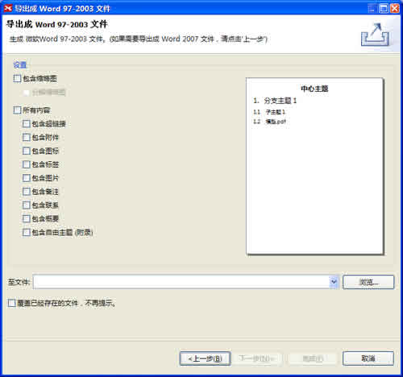
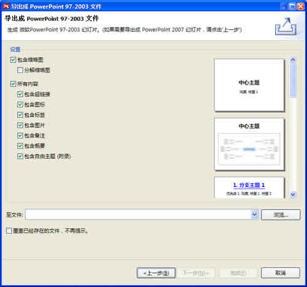

在XMIND Pro中，您可以将思维图导出至更多的格式，例如MindManager，PDF文档或思维图，MS Word/PPT（on Windows）。
按照下列步骤导出至PDF文件：
- 在菜单栏选择“文件 > 导出”；
- 在导出对话框中选择PDF文件；
- 点击“下一步”；
- 选择文件保存位置；
- 在预览对话框中设定是否需要：缩略图、备注、自由主题、标签、图标、图片、联系以及超链接等等；
- 点击“完成”结束。

按照下列步骤导出得到Mindjet MindManager Map：
- 在菜单栏选择“文件 > 导出”；
- 在导出对话框中选择“Mindjet MindManager Map”；
- 点击“下一步”；
- 选择文件保存位置；
- 点击“完成”结束。
按照下列步骤导出Word文档：
- 在菜单栏选择“文件 > 导出”；
- 根据需要在导出对话框选择“Word97-2003 document” 或者 “Word 2007 document”；
- 点击“下一步”；
- 选择文件保存位置；
- 在预览对话框中设定是否需要：缩略图、备注、自由主题、标签、图标、图片、联系以及超链接等等；
- 点击“完成”结束。

To Microsoft PowerPoint:
- 在菜单栏选择“文件 > 导出”；
- 根据需要在导出对话框选择“PowerPoint 97-2003 Presentation”或者“PowerPoint 2007 Presentation”；
- 点击“下一步”；
- 选择文件保存位置；
- 在预览对话框中设定是否需要：缩略图、备注、自由主题、标签、图标、图片、联系以及超链接等等；
- 输入页脚文字。
- 点击“完成”结束。

注意：
- 预览图仅仅是作为参考。实际导出可能会有所差别。
- 导出至微软Word文档以及PowerPoint文件目前只能在Windows系统中工作，并且当前电脑中必须安装相应的软件。
您可能还对下列内容感兴趣……